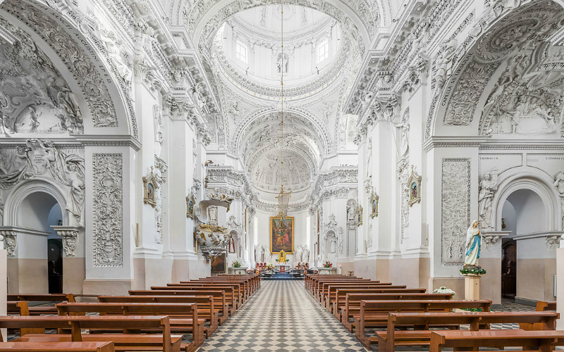
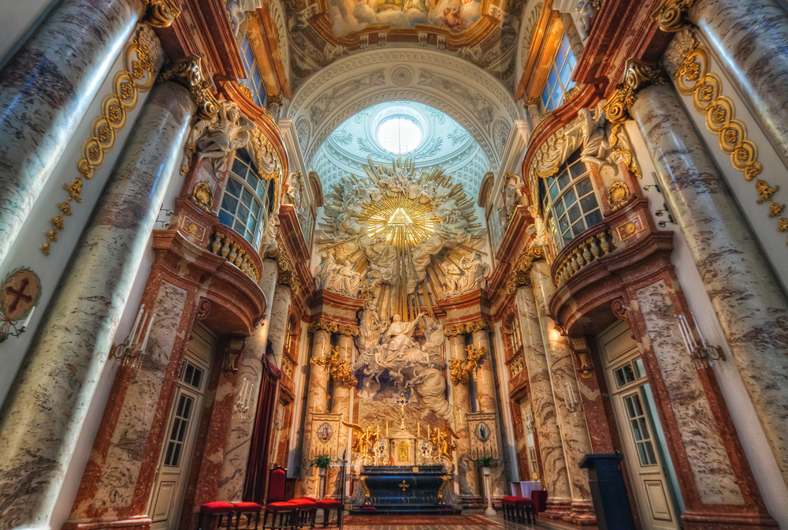

A church building or church house, often simply called a church, is a building used for Christian religious activities, particularly for Christian worship services.
The purpose of the stained glass window was to create a “heavenly light” that symbolized the presence of God in the church and to serve as a “Poor man’s Bible,” to teach Biblical stories to those who were illiterate.

Located within the steeple, church bells of often served as a communication device for the local townspeople. The primary purpose of ringing church bells was to signify the time for worshippers to gather for a church service.

In Christianity, the specific names and roles of the clergy vary by denomination and there is a wide range of formal and informal clergy positions, including deacons, elders, priests, bishops, preachers, pastors, ministers and the Pope.